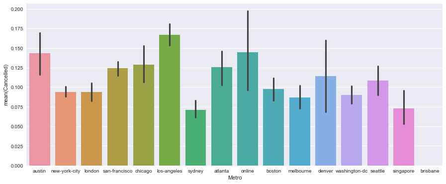

Cancellations at
General Assembly
THE PROBLEM
Business Understanding
Some GA enrolments never start their course.
Around 17.82% of all enrolments cancel before their first day.
This causes loss of income, difficulty in forecasting and wasted resourcing.

Enrolments either (1) cancel or
(2) become students.

END GOALS:
1. Know them
2. Stop them
THE SOLUTION
1. KNOW THEM
2. STOP THEM
THE PROCESS
THE PROCESS
STEP 1: EXPORT
STEP 2: DATA UNDERSTANDING
STEP 3: DATA PREPARATION
STEP 4: MODELING
STEP 5: EVALUATION
THE PROCESS
STEP 6: REPEAT STEPS 3-5
STEP 7: AND AGAIN
STEP 8: AND AGAIN
STEP 9: AND AGAIN
STEP 10: DEPLOY
EXPORTING THE DATA
Export the data from Looker and download it as a CSV, then read it into Python.
- Metro - which city were they enrolled in?
- Expected Payment - how did we expect them to pay?
- Application Type - how did they apply?
- Pardot Category - how did they find General Assembly?
DATA UNDERSTANDING
EXTRAPOLATING THE DATA
enrolments['APAC'] = enrolments['Metro'].isin(['sydney','melbourne','hong-kong','singapore','brisbane'])
VISUALISING THE DATA
Cancellations by month

Cancellations by metro
Payment methods

Days from Enrolment to Startdate
DATA PREPARATION
COMPLETING THE DATA
A lot of the missing data was cleared just by limiting the data to post mid-2014 and pre mid-2017.
enrolments = enrolments[enrolments.EnrolDate < 20170630]
Other null values were relatively easy to fix using the mean or simply entering "Unknown" for categorical variables, e.g. 'Metro', 'Course', 'Type', 'ExpectedPayment', 'ApplicationType', 'PardotCategory', 'EnrolDay'.
enrolments.ExpectedPayment.fillna("Unknown", inplace=True)
STREAMLINING THE DATA
Some of the data categories - Pardot Category, Application Type and Expected Payment Method - had ad hoc entries as well as clear categories.
enrolments = enrolments[enrolments.ApplicationType.isin(commonapptypes)]
DUMMYING THE DATA
Some algorithms will only accept numerical or boolean inputs, so the categorical data had to be 'dummied up'.
dummydata.shape
MODELING
CHOOSING THE MODEL
Classification problem: Students either cancel or don't cancel.
Unbalanced data: Cancelled students only accounted for 17% of the data; even a random pick will predict a non-cancelled student correctly 83% of the time.
EVALUATION
Method needs to be: uniform across models and based how we want to use the model.
Predicting a cancellation is like a very trivial medical diagnosis - we care more about true negatives than false positives (though they're still important).
Comparing models using: Confusion Matrix, Specificity, Sensitivity, AUC ROC.
Baseline (the random picker):
dumb = DummyClassifier(strategy='most_frequent')
dumb.fit(X_train, y_train)
y_dumb_class = dumb.predict(X_test)
Baseline
dumb = DummyClassifier(strategy='most_frequent')
dumb.fit(X_train, y_train)
y_dumb_class = dumb.predict(X_test)
print ('Accuracy Score: ', metrics.accuracy_score(y_test, y_dumb_class))
confusion_matrix = metrics.confusion_matrix(y_test, y_dumb_class)
print('Confusion Matrix: ', confusion_matrix)
print('Sensitivity:',(confusion_matrix[0,0]/(confusion_matrix[0,1]+ confusion_matrix[0,0])))
print('Specificity:',(confusion_matrix[1,1]/(confusion_matrix[1,1]+ confusion_matrix[1,0])))
Confusion Matrix:
[[6815 0]
[ 841 0]]
Sensitivity: 1.0
Specificity: 0.0
preds = dumb.predict_proba(X_test)[:,1]
fpr, tpr, _ = metrics.roc_curve(y_test, preds)
roc_auc = metrics.auc(fpr,tpr)
plt.figure()
lw = 2
plt.plot(fpr, tpr, color='red',lw=lw, label='ROC curve (area = %0.2f)' % roc_auc)
plt.plot([0, 1], [0, 1], color='navy', lw=lw, linestyle='--')
plt.xlim([0.0, 1.0])
plt.ylim([0.0, 1.05])
plt.xlabel('False Positive Rate')
plt.ylabel('True Positive Rate')
plt.title('Receiver operating characteristic example')
plt.legend(loc="lower right")
plt.show()

Decision Tree
ctree = tree.DecisionTreeClassifier(random_state=1, max_depth=100)
ctree.fit(X_train, y_train)
y_pred_class = ctree.predict(X_test)
print('Accuracy Score:', metrics.accuracy_score(y_test, y_pred_class))
confusion_matrix = metrics.confusion_matrix(y_test, y_pred_class)
print('Confusion Matrix:', confusion_matrix)
print('Sensitivity:',(confusion_matrix[0,0]/(confusion_matrix[0,1]+ confusion_matrix[0,0])))
print('Specificity:',(confusion_matrix[1,1]/(confusion_matrix[1,1]+ confusion_matrix[1,0])))
Confusion Matrix:
[[6030 785]
[ 716 125]]
Sensitivity: 0.884812912693
Specificity: 0.148632580262
...
plt.show()
Logistic Regression
LogisticRegression
logreg = LogisticRegression()
logreg.fit(X_train, y_train)
zip(all_ftcolumns, logreg.coef_[0])
print(logreg.fit(X_train, y_train))
y_pred_class = logreg.predict(X_test)
print('Accuracy Score:', metrics.accuracy_score(y_test,y_pred_class))
confusion_matrix = metrics.confusion_matrix(y_test, y_pred_class)
print('Confusion Matrix:', confusion_matrix)
print('Sensitivity:',(confusion_matrix[0,0]/(confusion_matrix[0,1]+ confusion_matrix[0,0])))
print('Specificity:',(confusion_matrix[1,1]/(confusion_matrix[1,1]+ confusion_matrix[1,0])))
Accuracy Score: 0.890151515152
Confusion Matrix: [[6815 0]
[ 841 0]]
Sensitivity: 1.0
Specificity: 0.0
...
plt.show()
KNN Classifier
KNN_model = KNeighborsClassifier(5)
KNN_model.fit(X_train, y_train)
y_pred_class = KNN_model.predict(X_test)
print('Accuracy Score:', metrics.accuracy_score(y_test,y_pred_class))
confusion_matrix = metrics.confusion_matrix(y_test, y_pred_class)
print('Confusion Matrix:', confusion_matrix)
print('Sensitivity:',(confusion_matrix[0,0]/(confusion_matrix[0,1]+ confusion_matrix[0,0])))
print('Specificity:',(confusion_matrix[1,1]/(confusion_matrix[1,1]+ confusion_matrix[1,0])))
Confusion Matrix:
[[6719 96]
[ 827 14]]
Sensitivity: 0.985913426266
Specificity: 0.0166468489893
...
plt.show()

Random Forest
rfclf = RandomForestClassifier(n_estimators=400, max_features=2, oob_score=True, random_state=1,class_weight='balanced')
rfclf.fit(dummydata[all_ftcolumns], dummydata.Cancelled)
rfclf.oob_score_
y_pred_class = rfclf.predict(X_test)
confusion_matrix = metrics.confusion_matrix(y_test, y_pred_class) print(confusion_matrix)
print('Sensitivity:',(confusion_matrix[0,0]/(confusion_matrix[0,1]+ confusion_matrix[0,0])))
print('Specificity:',(confusion_matrix[1,1]/(confusion_matrix[1,1]+ confusion_matrix[1,0])))
Confusion Matrix:
[[6815 0]
[ 0 841]]
Sensitivity: 1.0
Specificity: 1.0
Uh oh!
...
plt.show()
TUNING THE MODEL
feature_importance.sort('importance',ascending=False)
TUNING THE MODEL
feature_importance.sort('importance',ascending=False)
Removing some of the data that could be screwing with the model:
all_ftcolumns.remove('DaysLeadtoEnroled')
all_ftcolumns.remove('DaysEnroltoStart')
all_ftcolumns.remove('DaysInvoicetoEnrol')
all_ftcolumns.remove('EnrolWeek')
all_ftcolumns.remove('EnrolHour')
all_ftcolumns.remove('Startdate')
all_ftcolumns.remove('Enddate')
all_ftcolumns.remove('Month')
all_ftcolumns.remove('APAC')
from sklearn.ensemble import RandomForestClassifier
rfclf = RandomForestClassifier(n_estimators=400, max_features=2, oob_score=True, random_state=1,class_weight='balanced')
rfclf.fit(dummydata[all_ftcolumns], dummydata.Cancelled)
Confusion Matrix:
[[6412 403]
[ 39 802]]
Sensitivity: 0.940865737344
Specificity: 0.953626634958
...
plt.show()

DEPLOYING THE MODEL
XYZ